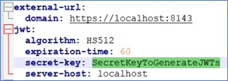
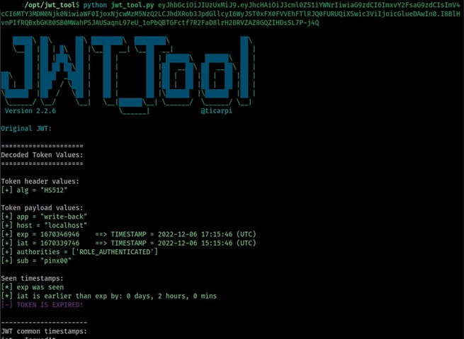
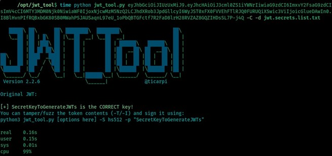

CVE-2023-27172 Weak JWT secret
Context
During an authorised penetration testing assessment conducted on Xpand IT's Write-Back software, Balwurk's security team found multiple security vulnerabilities, first disclosed to the customer and then responsibly submitted to the MITRE CVE program.
Balwurk discovered that the JSON Web Token (JWT) implementation used to establish an authenticated session with the Write-Back manager, either from the manager web dashboard or from the plugin, was signed with a weak secret which could easily be brute-forced or extracted through data mining.
What is Write-Back?
Write-Back is a Tableau extension that enables users to submit data directly from a Tableau dashboard to your database, allowing them to implement any actionable use case without leaving the analysis flow. Write-Back allows users to take the Tableau usage further and implement use cases where you need users to input data, such as forecasting, planning, adding comments, or any actionable process. Includes features like on-premise execution, audit, multiple back-end databases, and integrated authentication. Before diving into more technical details, we should describe the layout of Write-Back’s high-level back-end architecture: Write-Back (Server): Tableau extensions are web-based and deployed on a separate application server from the Tableau Server/Cloud. This means that Write-Back should be placed side by side with Tableau, ideally on a separate machine. Users will interact with the Write-Back extension through the Tableau dashboards that can be on different Tableau platforms, i.e. Tableau Desktop, Tableau Server, or even on Tableau Cloud. Write-Back Manager: Centralizes all configurations and enables platform administrators to fully control how Write-Back is configured. All of this is done on a web UI. Each Write-Back installation has its own Write-Back manager deployed on the same machine, allowing one to manage that instance.
Technical Description
By digging through Write-Back's Windows installation folders, it was possible to find multiple configuration files with clear-text hard-coded settings. One of these settings was the secret-key used to sign the JWT tokens generated upon a successful authentication, either from the Manager's web application or from the Tableau addon. If we look at the file C:\Program Files\Xpand-IT\Write-Back\manager\apache-tomcat\webapps\writeback-manager\WEB-INF\classes\config.yml it’s possible to quickly identify the following section:
 Figure 1: Hardcoded JWT secret in configuration file
Alternatively, we could have obtained the secret-key from the JWT token itself since the secret is susceptible to brute force. To help my analysis, I used the jwt_tool toolset: https://github.com/ticarpi/jwt_tool. Just by deconstructing the token, we can easily find which claim holds the user identifier:
 Figure 2: Token Deconstruction
To brute force the secret, I performed a classic dictionary attack. The first step is to select a good wordlist; if we ask Google for a common JWT secrets list, we can easily find the following: https://github.com/wallarm/jwt-secrets/blob/master/jwt.secrets.list, which will be more than enough.
For awareness purposes, the brute-forcing process was timed, with the results observable in the following picture:
 Figure 3: JWT timed dictionary attack
The secret was cracked in 160ms, and along with the remaining information collected, an attacker could now tamper with the claims in the token and sign it.
Another important detail observed from the deconstruction of the JWT is that the host claim is set to localhost as a default value, as is the app claim, which is always set to Write-Back. This means that since there is no other claim serving as a differentiator between instances, the token can also be reused to establish a session with another unrelated manager instance without requiring to actually authenticate as a user, as long as the app and host claims provided are correct.
Impact
This vulnerability will allow an attacker to rebuild the JWT token and access the application as any other user, even if not previously authenticated. Effectively compromising the confidentiality and integrity of the Write-Back system as a whole, since the tokens used by the add-on were signed using the same secret, so both the Write-Back manager and Write-Back plugin sessions are vulnerable to spoofing.
CVE ID: CVE-2023-27172
CVSS 3.1 Base Score: 9.1
CVSS Vector: AV:N/AC:L/PR:N/UI:N/S:U/C:H/I:H/A:N
Affected Vendor: Xpand IT
Affected Product: Write-Back
Affected Version: Write-Back Manager v2.3.1
Mitigation
All affected customers should update Write-Back to at least version 4.1.
Timeline
9-12-2022 - Vulnerability detected and reported to Write-Back.
22-02-2023 - Vulnerability submitted to MITRE.
10-03-2023 - Vulnerability accepted and CVE-2023-27172 reserved.
12-07-2023 - Official Patch released by Write-Back team.
Credits
Bruno Pincho @Balwurk